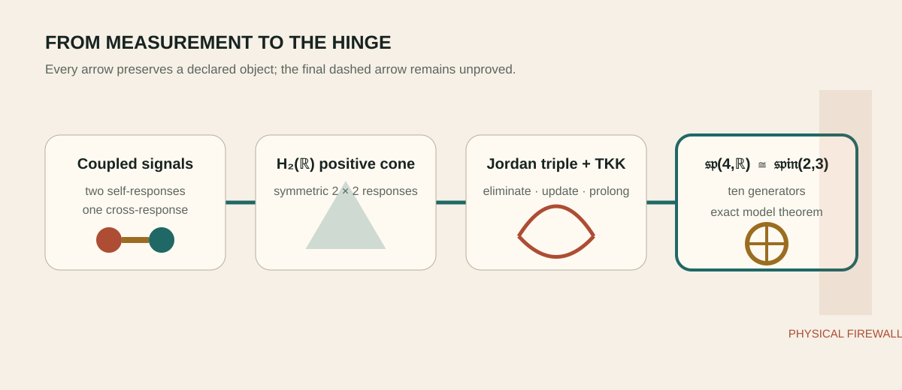

One exact response-to-symmetry completion
The Jordan–Lie hinge
Status: Follows from declared assumptions and has an inspectable certificate. Function: joins several typed results while letting the weakest edge set the claim.

What closes
The route to Spin(2,3) begins with positive two-face response data rather than a top-down list of low-rank coincidences. Positive two-face response data supplies \(H_2(\mathbb R)\); Schur elimination becomes a Jordan-triple operation; Tits–Kantor–Koecher prolongation supplies the graded generators; and the resulting ten-dimensional real Lie algebra is \(\mathfrak{sp}(4,\mathbb R)\).
Expanded claim pageScope · logical anatomy · verification route · boundary · sourcesOpen claim →The global low-rank isomorphism then identifies \(\mathrm{Sp}(4,\mathbb R)\) with \(\mathrm{Spin}_0(2,3)\). This is the firm mathematical middle rung.
Expanded claim pageScope · logical anatomy · verification route · boundary · sourcesOpen claim →What remains open
The derivation is conditional on the carrier and generator typing. Nature has not yet selected the action, state, vacuum, quantum measure or observed quantity that would make this algebra the dynamical symmetry of a physical system.
Expanded claim pageScope · logical anatomy · verification route · boundary · sourcesOpen claim →Begin with a measuring frame
Imagine recording two coupled signals: two voltages, two oscillator amplitudes or two stress readouts. Their self-responses and cross-response form a symmetric two-by-two table. Requiring every real combination of the signals to have nonnegative power makes that table positive. This positive cone is the everyday entrance to \(H_2(\mathbb R)\), the Jordan algebra of real symmetric two-by-two matrices.
Expanded claim pageScope · logical anatomy · verification route · boundary · sourcesOpen claim →The Jordan product X∘Y=(XY+YX)/2 keeps the result symmetric even when ordinary matrix multiplication does not. It is useful when the object of interest is a state or response cone rather than an ordered sequence of operations.
Expanded claim pageScope · logical anatomy · verification route · boundary · sourcesOpen claim →From elimination to symmetry
When an internal degree of freedom is removed from a coupled quadratic system, the effective response is a Schur complement. Repeating that operation produces the same triple combination that appears in Jordan theory. The Tits–Kantor–Koecher construction then packages translations, linear transformations and their opposites into a graded Lie algebra.
Expanded claim pageScope · logical anatomy · verification route · boundary · sourcesOpen claim →For the declared carrier, the closure is ten-dimensional \(\mathfrak{sp}(4,\mathbb R)\). This algebra preserves a nondegenerate oriented-area form on four real phase-space coordinates. A standard low-rank isomorphism identifies its connected group with \(\mathrm{Spin}_0(2,3)\), the double cover of the identity component of SO(2,3).
Expanded claim pageScope · logical anatomy · verification route · boundary · sourcesOpen claim →Why ten generators are a real gate
Four real coordinates do not automatically imply \(\mathfrak{sp}(4,\mathbb R)\). A pair of ordinary oscillators can explore only a three-generator squeezing/rotation subalgebra. Reaching ten requires independently available anisotropies and shears. Generator rank is therefore a kill test: if commutators close at three, the model is a lower-rank control, not hidden full Spin(2,3).
Expanded claim pageScope · logical anatomy · verification route · boundary · sourcesOpen claim →Algebra is not yet spacetime
A symmetry can act on response coordinates without acting on physical events. Calling the response cone spacetime would require a Lorentzian state space, causal localization, a physical inner product and a map to measured rods and clocks. The current result establishes an exact algebraic hinge and deliberately stops before that interpretation.
Expanded claim pageScope · logical anatomy · verification route · boundary · sourcesOpen claim →Chapter sources
- 1023_the_gaussian_gram_selector_is_the_h2r_jordan_logdet_barrier_and_a_peirce_slice_of_the_rank_three_cubic.md
- 1058_a_three_generator_jordan_furey_recursion_closes_all_of_sp4_but_requires_the_furey_channel_rotation_as_a_continuous_flow.md
- 1282_the_graph_to_spin23_lane_is_internally_exhausted_at_conditional_response_symmetry_not_spacetime.md